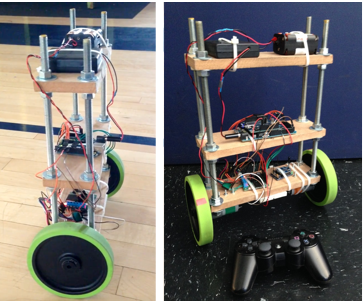

I built, wired, and programmed this mini segway as a personal foray into Arduino and control theory.
It uses an Arduino Due for the brains, a six degrees of freedom IMU for sensing tilt, and nested PID controllers for keeping it upright.
